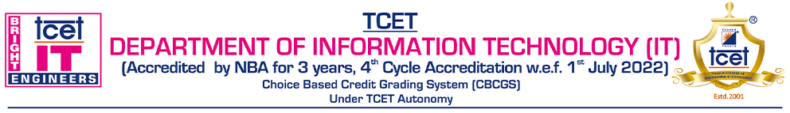
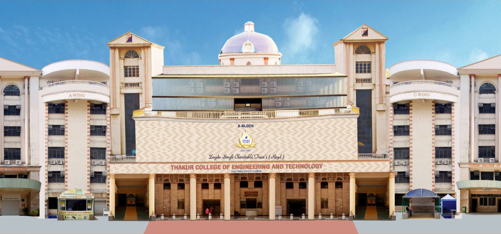

Thakur College of Engineering & Technology (TCET) is an autonomous and linguistic minority Institute. It was established in AY 2001-02 with a clear objective of providing quality technical education in tune with international standards and contemporary global requirements. TCET offers 11 U.G., 3 PG., and 3 Ph.D. (Tech.) programmes. TCET is an ISO 9001:2015 certified and certification has helped Institute to develop a student centric process driven system required for quality education in the 21st century.
As a result, Institute is accredited by NAAC with an "A" grade and all eligible programmes are accredited by NBA for three years. Some of the programmes are accredited multiple times. Moreover, all programmes are permanently affiliated with the University of Mumbai. TCET is the recipient of reputed IMC - Ramkrishna Bajaj National Quality Commendation Certification 2012 (Education) followed by IMC - Ramkrishna Bajaj National Quality Award 2015 (Education).
In July 2016 TCET has been selected for Asia Pacific Quality Award (APQA) for the best in the class award in the education category from Global Pacific Quality Award (GPQA). TCET has been awarded in the category of "Excellent Performing & Innovative Engineering Institute in Maharashtra" at the National Maharashtra Education Summit & Awards 2016, jointly organized by the University of Mumbai & CMAI Association of India. TCET is a member of the National Entrepreneurship Network (NEN). Confederation of Indian Industry (CII) and Maharashtra Economic Development Corporation (MEDC) for active industry-institute interaction where TCET has been felicitated by CII-Education Excellence Forum for enhancing Industry Connect, Employability and Faculty Competency. For more details one can visit college Website www.tcetmumbai.in